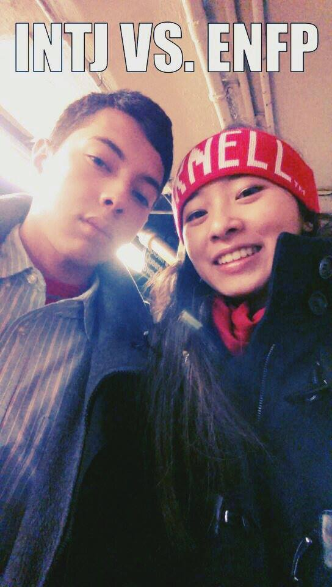

"Keirsey (1998) believed that the best partner for the INTJ is the ENFP Champion...
The INTJ, he suggested, will be intrigued by the ENFP's bubbling overflow of life, warmth, and spirit.
The ENFP, for his or her part, appreciates the INTJ's inner core of strength,
their gift for strategic planning, and their enigmatic reserve."
